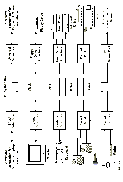

Application programs: These are the programs a user runs on the computer to make use of it. Applications include Word Processors, Data Base programs, Spread Sheet programs, Business Packages and Games.
DOS (Disk Operating System): DOS is the operating system for personal computers based on the Intel range of Microprocessors. In the early days of DOS computers (the IBM PC and clones and compatibles) hardware manufacturers used to provide variations of DOS tuned specifically for their systems. These variations are virtually indistinguishable except at a detailed programming level. What is more important is the variations due to the evolution of DOS, from one version to the next.
MICROSOFT WINDOWS, a Graphical User Interface: DOS provides a TEXT based user interface and as such is not very "user friendly". Windows is an alternative user interface that uses graphical symbols to launch applications and is much easier to learn and operate. All versions of Windows before Windows 95 are loaded from DOS. This process can be automated so the user never see's the DOS prompt. Windows 95 replaces DOS completely and is a complete operating system in it self.
 Click on the "thumbnail sketch of the following simple block diagram to get a larger image of it. This image will help you to understanding where the various parts of a typical PC Computer system fit. What you will see is too big to fit on the screen but should print in "landscape" mode when printed.
*Note: In older traditional DOS computers the Floppy and Hard Drive Drive Interfaces, and the basic I/O functions were provided by plug in cards. Today the Floppy and Hard Drive Interfaces and the Parallel and Serial I/O Ports are provided on the System Board. The Games Port is usually provided on the Sound Card.
Hardware Attributes CPU computing speed, and address space Hard disk(s) access speed, and capacity Floppy disk(s) size, and capacity Video board max. resolution, and color range Video monitor size, dot size, max. resolution, scan range Memory amount of memory and access speed I/O ports what is available and how many of each Network adapter type and speed Printer speed and quality of print
Floating point unit (Maths co-processor): A FPU chip such as the 8087, 80287, or the 80387 can be installed in earlier generation PCs to boost the speed of applications requiring substantial mathematical operations. The 80486DX and later generation Intel family processors have a maths floating point unit built in. A floating point unit only helps if the application in question is able to make use of it.
Processor clock speed: As the INTEL family of processors has been developed, the clock speed of each generation has gradually been increased through the life of each generation. Each new generation has had more advanced technology that makes it faster than the generation before it, for the same clock speed. Other manufacturers have cloned all generations of Intel processors and some of them claim significant increases in performance over the original INTEL product. The later generations of processors use clock multiplier technology where the internal speed of the processor is faster than the external clock speed, supplied via the computers Bus.
Although modern DOS computers are usually fitted with at least four Megabyte of memory DOS can only use the first 640K bytes of this for most applications. Microsoft Windows and many modern applications can make use of EXTENDED memory and starting with DOS version 5, DOS could load its system files and TSRs into a 64K byte block of memory above the first one Meg of memory.
At first, only the RAM memory was put on the Local Bus but some manufacture have put the Video Interface card and sometimes the Hard Disk controller, onto the System Board, and on the "Local Bus" with the memory. This early approach caused problems of "non standard hardware" and reduced the possibility of future upgrade. The introduction of Local Bus slots, some years ago, has meant the interfaces that can benefit from the speed of a Local Bus, can be put into Local Bus slots.
Starting with the early 386 computers the memory on the system board was connected directly to the processor and is described as being on a Local Bus. This memory can be accessed at the processors clock speed. Any additional memory was provided by a Memory Expansion Slot on the system board, that was on the local bus with the processor. These slots followed no industry standard with manufacturers organising their own connectors and expansion cards however they liked. This lead to a problem because as manufacturers changed the system board designs often, the cards for their older boards were not available for long. The need for these non standard local-bus slots was overcome by the introduction of high capacity SIMM RAM modules that allowed a great deal of RAM to be put on the system board.
While wrestling with the problem of providing a local bus connection for more RAM, some manufacturers decided the video system could benefit from being put onto the local bus with the memory. This would mean the video system could be communicated with at, or near, the processors clock speed rather than the 6 to 8 MHz of the old ISA bus. At first they provided another non standard local bus slot for the video card or simply built the video interface on the system board and connected it to the local bus between the processor and the RAM memory. This solution had the problems as the old RAM expansion card because board designs soon became obsolete and special cards became unavailable.
The problem of a universal Local Bus standard was first solved by the VESA (Video Electronics Specialists Association), a group of computer hardware manufacturers who first got together to sort out standards for Super VGA video systems. The VESA group developed a local bus slot called VESA or VL bus.
The VESA Bus is an additional connector on the end of the standard ISA Bus slots that provided direct access between the processor and cards plugged into those slots. This local bus provided 32 bit data paths for both Data and Address and could be operated at clock speeds as high as 50 MHz. VESA local bus slots were intended for Video, Hard Disk and Network cards. The VESA bus became popular almost overnight in early 1993. The VESA local bus is often simply referred to as Local Bus.
At the same time as the VESA group was working on its local bus solution, INTEL was developing a more advanced local bus called the PCI Bus. This bus took some time to develop and at first did not provide much of an improvement over the VESA bus when used with 486DX33 or 486DX2/66 processors. The VESA bus was popular for about one year but as the problems with the PCI bus were solved and more and systems used DX4 or Pentium processors, VESA gave way to the PCI bus and today it is the industry standard. It has become so much of a standard as to be used across platforms, being used by Apple and IBM in their PowerPC based computers and Sun and DEC in their work stations.
When DOS was designed only 128K bytes of the memory space was assigned to the Video RAM and now this causes a bottle neck in the process of writing to the Video RAM. Today as much as four Meg byte of Video RAM may be required and this must be accessed a small portion at a time.
The Video System has seen substantial evolution since the early monochrome (MDA) and colour (CGA) systems. The AT computer introduced a better colour system called EGA and today the only video system available is VGA. Within the VGA standard there are many display modes providing a wide range of resolutions and colours. VGA in it simplest form provides a resolution of 640 by 480 and a range of 16 colours but "Super VGA", modes can provide in excess of 1024 by 800 resolution and in excess of 64,000 colours. The performance of the video system is dependant on both the Video Interface Card and the Video Monitor. The Video Interface card must have sufficient Video RAM to handle the range of resolutions and colours required and the monitor must be able to operate at the Horizontal and Vertical scan rates required by those Video Modes. The use of Video Accelerator Cards and putting the video card on a local bus has greatly increased the speed of the video system and has gone a long way to solving the processing bottle neck the video system had become.
Video Display Units (Monitors) are commonly available in 14, 15 17 and 20 inch sizes. The difference in price between a 14 inch and a 15 inch monitor is not much today but 17 inch monitors are still much more expensive. The quality of a monitor is determined by the Dot Pitch, the scan frequency range and by the sharpness, colour purity and convergence accuracy.
The most common floppy disk formats for use in DOS computers over the years have been:
IBM introduced a 2.88M byte format, using 3-1/2 inch diskettes but this has seen little use.
The Games Port is for an Analogue Joy Stick and can have two Joysticks connected to it.
The Parallel ports can be used for interfacing to:
The Serial ports are used for:
The routines in the BIOS ROM provide four basic start-up functions to the computer. (these are fered to as the POST routines)
In addition to the Post routines, the BIOS ROM also supplies basic input/output routines that can be used by DOS and by application software. These routines include services for disk access, parallel and serial port access, video and keyboard access.
Older DOS computers required a setup routine to be loaded from a disk to setup the hardware but modern computers have a series of setup routines in the BIOS ROM that can be accessed before the computer boots into an operating system.
The CMOS fitted to modern computers also allows many more options than these basic ones, options such as bus speed, boot up sequence, use of a password, and shadow RAM to mention but a few. All this information is saved when the computer is turned off and is available each time the computer restarts. Since the CMOS memory is not read-only memory, the data in it can be updated by a set-up program. The first AT type computers required the set-up routines to be loaded from a set-up disk but modern hardware has the set-up routines as part of the BIOS ROM, and the set-up is accesses by some "Hot Key" combination as the computer boots up.
A few users have adopted IBMs alternative operating system, OS/2 and various flavours of UNIX have been used on Intel hardware, but this to has failed to make much of an impact on the use of DOS as the operating system for Intel based hardware.
The main reason for the outstanding success of DOS and now Microsoft Windows has been the very large range of application software available for these operating systems.
When IBM released the PS/2 range, their successor to the AT, they switched over to a new operating system called OS/2. OS/2 was co-produced by IBM and Microsoft but IBM had a disagreement with Microsoft and continued to develop OS/2 on its own. OS/2 is an advanced 32 bit operating system that promised many advanced features over DOS and Microsoft Windows.
With the rapid acceptance of Microsoft Windows 3.1, an operating environment with a Graphical User Interface (GUI), Microsoft concentrated their future efforts on operating systems based on this user interface. Windows For Workgroups added peer to peer networking and is ideal for the small office or class room situation.
Windows NT was Microsofts first advanced 32 bit operating system and was quite a big advance over the DOS we had come to know, and to fit around its built in limitations. Windows NT can work with DOS, Windows, OS/2, Posix (a flavour of Unix) and its own NT applications. Many of the more advanced DOS applications are available written for Windows NT. Windows NT is a complete operating system in itself and does not require DOS as a foundation.
Windows NT has extensive networking built in and this is provided with an advanced file system and extensive security provisions. NT competes in the market place with Novell and with the OS/2 based Lan Manager.
Windows 95 was Microsofts mass market 32 bit operating system for desk top computers and gained popularity at a rapid rate since its introduction during the second half of 1995. Unlike the earlier Windows versions, Windows 95 does not require DOS to be loaded first, it is a complete operating system on its own. The next version of Microsofts GUI operating system is Windows 98.
| Block diagram of a PC System | Back to the opening index | Book one index |
{kind=link}
{kind=link}
{kind=link}